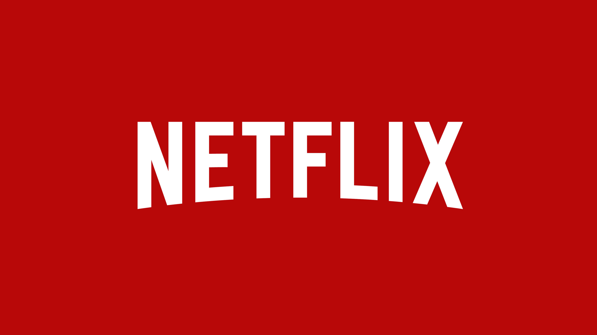

Twilight Sparkle is a unicorn pony who is given the task of learning about friendship by Princess Celestia. Sparkle is sent
along with the Princess' assistant dragon, Spike, to Ponyville.
First episode date: October 10, 2010
Program creator: Lauren Faust
Based on: My Little Pony; by Bonnie Zacherle
Composers: : William Anderson; Daniel Ingram (seasons 3–6); Kelly Davidson; Steffan Andrews (seasons 3–4);
Genre: Fantasy; Comedy;
 |
 |